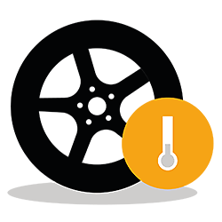
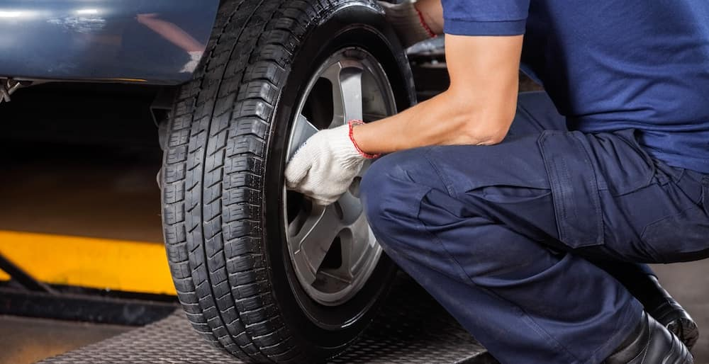
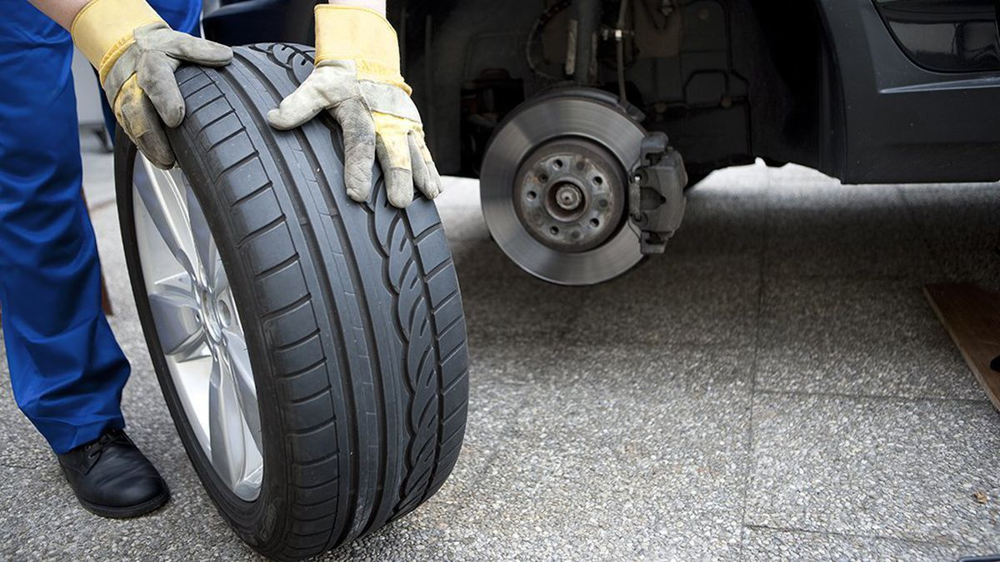

How to Take Care of Your Tires
With regular maintenance, your new tires will keep performing until the day you have to replace them. Tires wear out gradually so it can be difficult to determine the point where a deterioration in performance is a cause for worry, Dec 7, 2017
Maintaining correct tire pressure
Make it a habit of checking tire pressure regularly (every 2-4 weeks) as proper tire inflation can make driving a lot safer and make your tires last longer.
Check your tire pressure regularly
Even in ideal conditions, tires lose pressure at a rate of about 0.69 bar or 1 pound per square inch (psi) per month. That rate increases as temperatures rise. Check tire pressure at least once every month and have a good look at the treads while you’re at it. You’ll find the recommended pressure in your vehicle owner’s manual or on the sidewall of your tire.
How do I check tire pressure?
Tire pressure is expressed as pounds per square inch (PSI). It’s based on a vehicle’s weight and size, and it’s important to use exactly the pressure that’s recommended for your vehicle by the manufacturer. This will ensure safety and optimal performance.
Check the pressure every two to four weeks, and always before setting off on longer journeys or if you’re carrying additional loads.
Cold tires
You’ll get a more accurate reading if you check the pressure when the tires are cold, before the outside temperature rises and the tires are exposed to direct sunlight. If the outside temperature increases by 10 degrees Celsius, the tire pressure will increase by 1.6 PSI. In winter, in some climates, tires could experience a drop of up to 5 PSI.
Find the handbook
Identify the manufacturer’s recommended pressure for the front and rear tires of your particular vehicle. This is the minimum amount of air pressure needed in cold tires to support your vehicle. You’ll probably see two figures, one for normal use and one for full loads; it will look something like “35 PSI.” You’ll find this either in the vehicle handbook in the car, or inside the fuel filler cap, or on the driver’s door post. If you can’t find it, consult your vehicle dealer, manufacturer or qualified tire professional.
The gauge
Use a reliable, accurate tire pressure gauge either at home (you can buy one at an auto parts dealer) or at a gas station (tire pressure gauges can be used free of charge). Gauges are either battery-operated digital gauges or more traditional stick-type gauges.
Check the tire pressure
Remove the end cap on the tire’s air valve and keep it safe. Place the gauge onto the valve stem and press down quickly and firmly until the hissing sound of air escaping stops. Your gauge will now show a reading of the PSI. Compare this with the manufacturer’s recommendation.
Adjust the pressure
If the reading is above the recommendation, push in the valve to let out some air. You may have to do this a few times until the gauge shows the correct reading. If the PSI reading is below the recommendation, use an air compressor (at the gas station if you don’t own one) to fill the tire with air until it has the correct level. Replace the valve cap tightly and repeat the process with the three remaining tires, plus the spare tire.
Checking Your Tire Treads
The condition of your tire tread is one indicator of your vehicle’s health. Regular checks of all four tires can help diagnose potential problems that may require professional intervention. Inspect your tires at least once a month, as well as before and after long journeys.
Signs to look out for
Tread wear bars are visible:
These bars of hard rubber are designed to be visible when your tire’s tread has become worn. If these tread wear bars show up, it’s time to buy a new set of tires. If you’re not sure where they are, you’ll see a mark on the sidewall that indicates where to look.
Your tire depth gauge indicates worn treads:
There should be a minimum of between 2-3mm tread depth. It’s a good idea to purchase an inexpensive tread depth gauge to check that your tires meet the legal minimum. Make sure you take measurements on both the inside and outside of your treads.
Small objects are lodged in the tread:
It’s not uncommon for small objects to get stuck in your treads. If they’re stuck in the groove, take them out carefully, being sure not to damage the tire. If you spot something that looks as if it’s gone through the rubber, like a nail, leave it in until you can get to a garage. Otherwise you’re likely to end up with a flat tire.
Tires are worn on the outside:
If you notice that your tires are worn on both of their edges, you might need to inflate them or check for leaks. Tires lose air naturally, but driving on underinflated tires uses more fuel and puts you at greater risk of accidents. Make sure you check pressure regularly. If you notice that only the front tires have worn edges, you might be taking curves and corners too quickly.
Excessive wear in the center of the tread:
If the center of the tread is wearing more than the outer edges, you might have overinflated your tires. This can increase the risk of a tire blowout. Find the manufacturer’s specifications, get a pressure gauge and then deflate to the recommended pressure level.
Uneven wear across a single tire:
The wear patterns on your treads can alert you to problems elsewhere on your vehicle. If you notice uneven patches of wear, or bald spots, you might need your wheels balanced or aligned. Sometimes bald spots indicate that your shocks are worn. Talk to a professional.
Uneven wear across the tire footprint:
Your tires won’t wear out at the same rate. The front of your vehicle carries the engine and does most of the steering work, so tires on your front axle will wear out more quickly. If they seem to be wearing more than normal, you should have your suspension checked. If wear is greater on one side of the vehicle than the other, it might be time for an alignment.
Saw toothed pattern on tire edges:
If you notice that your tires have a saw toothed or feathered appearance around the edges, the likely cause is erratic rubbing against the road. That’s a sign that you may need an alignment.
Rotating Your Tires
Ensure that your tires wear evenly by having them rotated every 10,000 to 12,000km, or every six months.
Rotating your tires helps achieve uniform wear across the full set. Even wear can help extend the life of your tires and obtain balanced handling and traction. Regular tire rotation can help keep your vehicle handling smoothly. It’s a good idea to rotate them at every second oil change.

Why should you rotate your tires?
The tires at the front of your vehicle commonly wear out faster than those at the rear. If you change their positions frequently, it helps them wear more evenly and reach maximum tread life. It is worth to remember that tire rotation can’t correct wear problems due to incorrect inflation pressures.
How often do they need rotation?
Every second time you get an oil change (roughly every 10,000 to 12,000 km) it’s a good idea to rotate your tires. If you regularly drive at high speeds, carry heavy loads, or drive long distances, the extra strain might mean slightly more frequent rotations. You should rotate them as soon as possible if you notice any uneven wear. If they emit a humming sound when you’re driving on a smooth road, it might be time to look into rotation.
Can I do a tire rotation myself?
Because it’s important to get your tires fitted just right, we recommend that you go to your dealer or a garage to have a professional do it. But it’s easy enough to do yourself, and it’s a good idea to understand how it works, even if you leave it to a pro. You don’t need any specialist tools, just some space and a few hours.
Always check your vehicle owner’s manual for any recommendations by your vehicle manufacturer.
It’s suggested that your tire rotation follow the patterns shown below.
You should rotate tires front-to-back only if the tires are all the same size (patterns A-D).
Some vehicles are equipped with different sized tires and wheels on the front versus the rear axle. In that case, pattern E is suggested (if non-directional tires are mounted).
When rotating tires with a directional tread pattern, always observe the arrows molded on the sidewall. These arrows indicate the turning direction of the tire which must be carefully respected. In case of same size directional tires, pattern A could be followed.
Vehicles that use different sized directional tires or wheels with different front and rear offsets with directional tires will require dismounting, mounting and rebalancing in order to correctly rotate tires – Always check your vehicle owner’s manual for any recommendations by your vehicle manufacturer.
Tire Replacement
Regular inspection and maintenance of your tires will help prolong their lifespan, but all tires will wear out eventually.
Tire life varies. It depends on your driving habits, the climate you live in and how well you maintain your tires. All tires wear out or become damaged and will eventually need replacing.

The treads are worn:
Even with the best maintenance, your treads will wear out over time. Most tires have tread wear bars. These bars of hard rubber show up on your tire when your tread depth has gone beyond the limit for safe driving, which is generally 1.6mm. You should also check your treads for uneven wear patterns that can indicate other problems with your tires or your vehicle.
There is visible damage:
Check your sidewalls and treads for damage. If you notice small cracks in the sidewall – known as “crazing” – it’s time to replace the tires. Sidewalls aren’t very thick and a damaged sidewall can cause your tire to fail. You should also check treads, shoulders and sidewalls for bubbles, blisters, cuts or cracks. These are a sure sign that you need new tires, even if the tires are not yet worn out through use.
When buying replacement tires, it’s a good idea to replace all four tires at once. If you only buy two, then make sure they match the partly worn tires. Ensure that they are mounted on the rear axle of the car, which will provide better traction and stability while you drive.